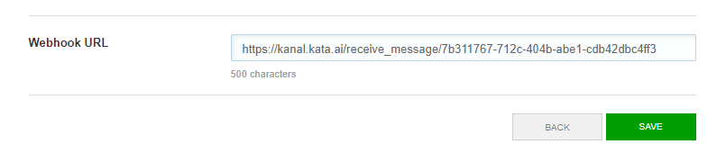
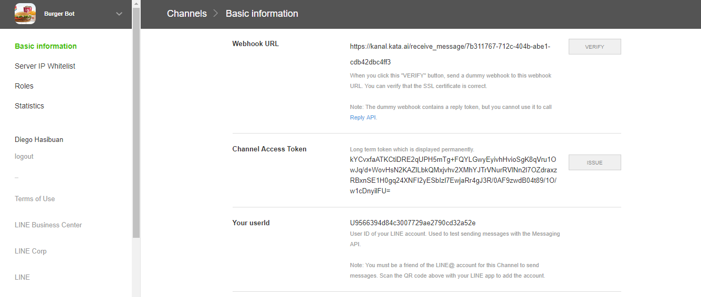

Quick Start
Hello Bot
Before started Simple explanation about the fundamental components of the bot consists of:
- nlu's : the natural language understanding/model, defined to be used in the bot
- intents : is list of purpose defined to understand user intention
- states : is the stages/procedure of interaction with user
- actions : is list of action defined to perform in each state
- methods : case of more complicated computation/action needed. In javascript language
Init project
Create folder for your bot project, and init your bot there.
$ mkdir <bot-folder>
$ cd <bot-folder>
$ kata init <bot-id> <bot-name> [version]
Note: login not required to init bot
this will generate folder with nlu.yml, bot.yml, message.yml, flows folder example:
schema: kata.ai/schema/kata-ml/1.0
name: <bot-name>
desc: Bot Description
version: <bot-version> #example 0.0.1
flows:
fallback: $include(./flows/fallback.yml)
config:
messages: $include(./messages.yml)
maxRecursion: 10
nlus: $include(./nlu.yml)
id: <bot-id>
Writing Flow
Modify nlu.yml, to add handler for the next intent
confidenceLevel:
type: method
method: confidenceLevel
# nlu greet will define input keyword hello, hallo, hai, and hi as hello
greet:
type: keyword
options:
keywords:
hello:
- hello
- hallo
- hai
- hi
Modify intents at flow/fallback.yml. Make 'hi' intents to use nlu 'greet' instead.
hi:
initial: true
type: text
classifier:
nlu: greet
Flow Explanation
- Intent will have value of 'hi' if input is caught by 'greet' NLU, and 'dunno' if no other intent caught by its classifier ('fallback: true' is like the default)
- After going to intents, next step is to go to states which have the value 'initial: true'.
- Case the input caught by 'hi' intents ('hello', hallo, etc). 'sayHi' transitions condition will be fulfilled, then at 'sayHi' transitions 'sayHi' actions will give text output from messages.yml with templates/sayHi's value
- Case the input not caught by any intent (will have 'dunno' as its intents). 'sorry' transitions condition as the default transitions from 'init' will be fulfilled, then at 'sorry' transitions 'saySorry' actions will give text output from messages.yml with templates/saySorry's value
Push your Bot
$ kata push --rev <patch | minor | major>
Deployment
$ kata deploy <bot-name> [version]
NOTE: Repeat push and deployment each time you want to update your bot at the messaging application
Adding Channel
Important: This section and Setup Bot are related.
$ kata add-channel [options] <bot-name> <channelName> : ChannelId
type: <line | fbmessenger>
token: <channel access token> # given from the chat platform
refreshToken : [refresToken] # may empty
secret: <channel secret>
url: <url> # Example: 'https://api.line.me' for LINE
Example
$ kata add-channel botName botChannel
NOTE:
- adding channel required at least ONCE
- channelName can be anything (to differentiate channels)
Adding webhook
Setup webhook into url:
https://kanal.kata.ai/receive_message/{channelId}
NOTE: channelId generated from kata deployment-addChannel
Example 
Example: Create and Setup Bot Official Account (LINE)
Step:
- Open Line Business web page
- Choose Messaging API, Start Using Developer Trial
- Fill required information
- Enable API
- Choose Settings → Bot Settings, Allow use webhooks and open LINE Developers
- Don't forget to add Webhook URL
Example

Important: This bot information is needed in Setup/Adding Channel
Pizza Bot (LINE)
Before continue into this section, please finish the Hello Bot section first.
Step 1: Differentiate greet, and can't understand input
Step 1.1: Defining nlu
add this in nlu.yml
# model for entity recognition (example: person name, places, etc)
ner:
type: verstandTagger
options:
model: dcaca5ae-be7f-42f2-a6a1-2b250d4336fd
# model for question, instruction, statement & greeting (qisg)
qisg:
type: verstandClassifier
options:
model: cb58d784-9e87-40d5-bae1-6077b934c061
# nlu for YES or NO statement
yesno:
type: verstandClassifier
options:
model: b7df76e5-b95d-4925-9f86-2796ea85403a
Step 1.2: Defining flows
Modify fallback.yml
# case no other flow's intent caught something
fallback: true
intents:
fallbackIntent:
fallback: true
states:
init:
initial: true
transitions:
init:
fallback: true
action:
name: fallbackAction
actions:
fallbackAction:
type: text
options:
text: "Maaf, saya tidak mengerti."
Create welcome.yml
priority: 9
intents:
greeting:
initial: true
type: text
classifier:
nlu: qisg
match: greeting
priority: 10
states:
init:
initial: true
transitions:
greet:
condition: "intent == 'greeting'"
greet:
end: true
# Normally it is tedious if we have to define a transition to a state that
# is available in every state. e.g. Cancel state. To mitigate this we can define
# a floating transition. The system will automatically attach this transition in
# every state.
float:
fallback: true
action:
- name: greetPerson
condition: "!context.greetCount"
- name: greetAgain
condition: "context.greetCount >= 1"
# Specify mapping or method to be executed when transition is started
# create context.greeCount or do increment
transit:
context.greetCount: "intent == 'greeting' ? (context.greetCount || 0) + 1 : 0"
actions:
greetAgain:
type: text
options:
text: "Hai mulu, buruan pesen dong"
greetPerson:
type: text
options:
text: "Halo pizza bot disini"
Modify bot.yml
# add flow of welcoming user
flows:
welcome: $include(./flows/welcome.yml)
fallback: $include(./flows/fallback.yml)
Now your bot able to tell if user is greeting, bot will response that it doesn't understand if user input anything other than greeting.
Step 2: Bot can understand user's order
Add nlu at nlu.yml.
# nlu for order a pizza based by keywords
order:
type: keyword
options:
keywords:
pizzaOrder:
- pesan
- pesen
- beli
- pesen pizza
- pizza dong
- pizza
now create order.yml inside folder flows
intents:
orderCommand:
initial: true
type: text
classifier:
nlu: order
match: pizzaOrder
states:
init:
initial: true
action:
- name: pizzaOptions
- name: askOptions
transitions:
init:
fallback: true
actions:
pizzaOptions:
type: text
options:
text: 'Kami punya pilihan menu:\n 1)Peperoni\n 2)Ronipepe'
askOptions:
type: text
options:
text: 'Mau yang mana?'
dont forget to modify flows in bot.yml
flows:
welcome: $include(./flows/welcome.yml)
order: $include(./flows/order.yml) #add this line of code, to add order.yml into bot flow
fallback: $include(./flows/fallback.yml)
Now the bot can have this following of conversation:
$ user: 'Hai'
- bot: 'Halo pizza bot disini'
$ user: 'pesan pizza'
- bot: 'Kami punya pilihan menu:\n 1)Peperoni\n 2)Ronipepe'
- bot: 'Mau yang mana?'
$ user: 'Halo'
- bot: 'Hai mulu, buruan pesen dong'

Step 3: Modify the text menu into carousel
now modify order.yml by adding pizzaOptions in actions
# Example of hard-coded carousel
pizzaOptions:
type: "template"
options:
type: "carousel"
items:
- text: 'untuk penggemar bola pepe dan roni'
title: 'Pepperoni'
thumbnailImageUrl: <https image url>
actions:
- type: "postback"
label: 'Pepperoni'
payload:
type: pizza
pizza: pepperoni
- text: 'untuk pecinta ayam. Eaaaa'
title: 'Chick Lover'
thumbnailImageUrl: <https image url>
actions:
- type: "postback"
label: 'Chick Lover'
payload:
type: pizza
pizza: chicklover
Now it should show carousel of menu instead of only text.
Step 3.1: Use the input from carousel.
New intent needed to be able to catch input from carousel. Which the type is data, and payload content used to identify which carousel is being used (in case if there are more than 1 carousel or other input categorized as type data).
Add intents at order.yml.
# This will prevent intent caught by *fallbackIntent* at *fallback.yml*
pizzaChosen:
initial: true
type: data
condition: payload.type == 'pizza'
reenter:
type: command
condition: content == "reenter"
Add intents at welcome.yml
reenter:
type: command
condition: content == "reenter"
remove the greet state and modify the init state
states:
init:
initial: true
transit:
context.greetCount: "intent == 'greeting' ? (context.greetCount || 0) + 1 : 0"
action:
- name: greetWOPerson
condition: "!context.greetCount"
- name: greetAgain
condition: "context.greetCount >= 1"
float:
fallback: true
Modify init states and add 2 other states at order.yml.
init:
initial: true
transitions:
showPizza:
condition: "intent == 'orderCommand'"
init:
fallback: true
showPizza:
action:
- name: pizzaOptions
- name: askOptions
transitions:
confirmPizza:
condition: "intent == 'pizzaChosen'"
showPizza:
fallback: true
confirmPizza:
end: true
action:
- name: confirmPizza
transitions:
confirmPizza:
fallback: true
Add actions di order.yml.
confirmPizza:
type: text
options:
text: "Jadi benar pesanannya adalah $(payload.pizza)?"
The bot can now understand the user input from carousel. payload is temporary, after some transitions it will have no value stored. later on we need to assign it to a context

Step 4: Add flow until confirmation of the the order
Two state is added in this step, to know how many pizza that the user want to order and confirm if the user already order the right one. After confirmation the state will come back to initial state so the user can start order again.
Add nlu at nlu.yml
quantity:
type: regex
options:
regex: "[1-9]"
Add intents at order.yml
pizzaQntty:
type: text
classifier:
nlu: quantity
attributes:
quantity:
nlu: quantity
Add and restructure the states in order.yml
showPizza:
action:
- name: pizzaOptions
- name: askOptions
transitions:
pizzaQuantity:
condition: "intent == 'pizzaChosen'"
mapping:
context.pizza: "payload.pizza" # remember payload.pizza for the whole session
showPizza:
fallback: true
pizzaQuantity:
action:
- name: askQuantity
transitions:
confirmPizza:
condition: "intent == 'pizzaQntty'"
mapping:
context.quantity: "attributes.quantity"
context.answer: "null"
pizzaQuantity:
fallback: true
confirmPizza:
action:
- name: confirmPizza
transitions:
done:
fallback: true
transit:
context.answer: "intent"
done:
end: true
action:
- name: sayThanks
condition: "context.answer == 'yes'"
- name: cancelOrder
condition: "context.answer == 'no'"
Add and modify actions at order.yml too
askQuantity:
type: text
options:
text: 'Mau pesan berapa banyak? (Min.1 Max.9)'
confirmPizza:
type: text
options:
text: "Jadi benar pesanannya adalah $(context.pizza)?"
cancelOrder:
type: text
options:
text: "Baiklah, silahkan pesan lagi di lain waktu"
sayThanks:
type: text
options:
text: "Terimakasih sudah memesan :)"

Step 5: Modify confirmation answer to button
modify the order.yml by adding the yesNoButton in actions
yesNoButton:
type: template
options:
type: button
items:
text: "Benar pesanannya adalah $(context.pizza) sebanyak $(context.quantity)?"
actions:
- type: postback
label: Ya
payload:
type: confirm
confirm: "yes"
- type: postback
label: Tidak
payload:
type: confirm
confirm: "no"
Step 5.1: Use the input From Button
Add intent at order.yml
yesno:
type: data
condition: payload.type == 'confirm'
modify the confirmPizza and init state
init:
initial: true
action:
- name: sayThanks
condition: "context.answer == 'yes'"
- name: cancelOrder
condition: "context.answer == 'no'"
transitions:
showPizza:
condition: "intent == 'orderCommand'"
init:
fallback: true
confirmPizza:
action:
- name: yesNoButton
transitions:
init:
fallback: true
mapping:
context.answer: "payload.confirm"
transit:
context.answer: "intent"
after confirmation, at confirmPizza state it will return to init state and ready for another 'pesan' command.

Step 6: Using LINE Sticker as bot response
In this step we want the bot to be able to give response to user with sticker, to identify what sticker will be used the packageId and stickerId is needed as argument in actions.
add action in order.yml
sayThanksSticker:
type: template
options:
type: sticker
items:
stickerId: '3'
packageId: '1'
modify init state in order.yml
init:
initial: true
action:
- name: sayThanks
condition: "context.answer == 'yes'"
- name: sayThanksSticker
condition: "context.answer == 'yes'"
- name: cancelOrder
condition: "context.answer == 'no'"
transitions:
showPizza:
condition: "intent == 'orderCommand'"
init:
fallback: true

Step 7: Using more dynamic carousel
In this step we want to create carousel but not each content is written specifically by developer, instead we can use JSON Object as its input.
Create methods in order.yml to simulate carousel which use JSON Object as input. The JSON Object example will be saved at context.arr when transit called jalaninArr method.
methods:
jalaninArr(ctx): "
ctx.context.arr = [{'item':'Chicken', 'desc':'chick lover'}, {'item':'Pepperoni', 'desc':'pepe rooney'}];
return ctx;
"
In state init at order.yml, add transit so there will be context which contain JSON Object example
transit: jalaninArr
Add actions at order.yml, dynamic carousel actions which use JSON Object from methods jalaninArr
pizzaOptionsDynamic:
type: template
options:
type: carousel
data: $(context.arr) # [{'item':"Chicken", 'desc':"chick lover"}, {'item':"Pepperoni", 'desc':"pepe rooney"}]
template:
text: $[desc]
title: $[item]
actions:
- type: postback
label: $[item]
payload:
type: pizza
pizza: $[item]
In state showPizza at order.yml, change action from pizzaOptions to pizzaOptionsDynamic
showPizza:
action:
- name: pizzaOptionsDynamic
- name: askOptions
transitions:
pizzaQuantity:
condition: "intent == 'pizzaChosen'"
mapping:
context.pizza: "payload.pizza"
showPizza:
fallback: true
Documentation built with MkDocs.